Comprehensive Lab Animal Monitoring System CLAMS (Columbus Instrument) | |
| 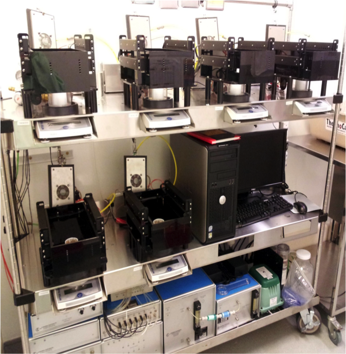 |
|
All enquiries are welcome to Shawn Liu (shawnhz@hku.hk) | |
The Minispec LF90 Body Composition Analyzer (Bruker) | |
| 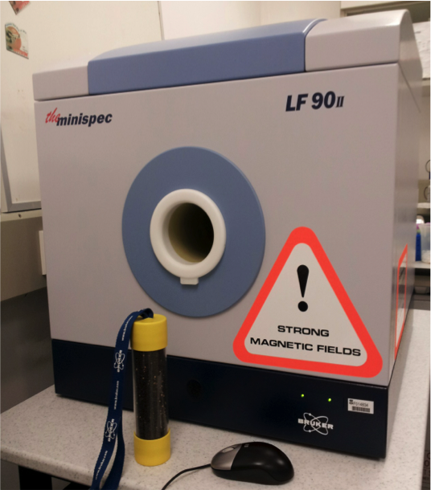 |
|
All enquiries are welcome to Shawn Liu (shawnhz@hku.hk) | |
Wire Myography for Isometric Tension Recording (Danish Myo Technology DMT) | |
| 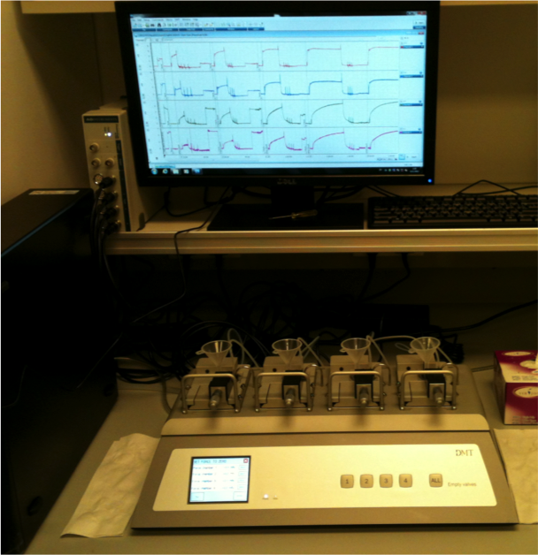 |
|
| Online Booking | All enquiries are welcome to Leigang Jin (zjjinleigang@163.com) |
BP-2000 Blood Pressure Analysis System (Visitech Systems) | |
| 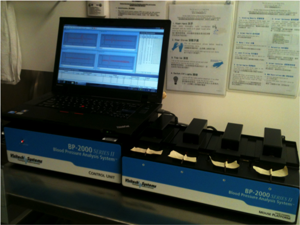 |
|
| Online Booking | All enquiries are welcome to Leigang Jin (zjjinleigang@163.com) |
Animal Treadmill (Columbus Instrument) for exercise study | |
| 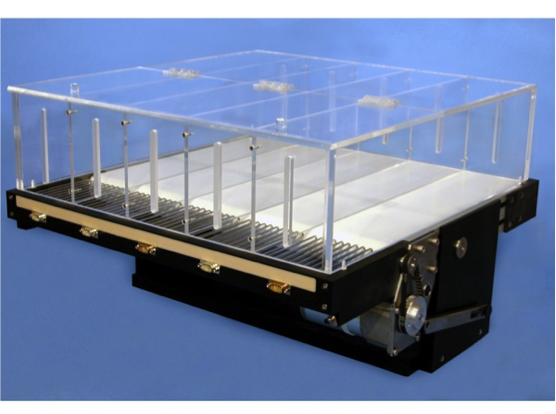 |
|
| Online Booking | All enquiries are welcome to Max Wang (yaowang@hku.hk) |
Stereotaxic instrument (Stoelting) and micro injector (Harvard) for brain study | |
| 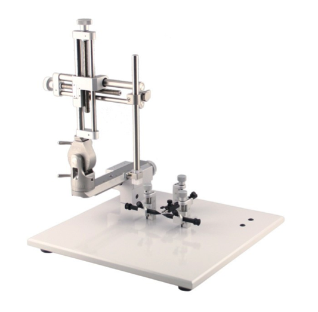 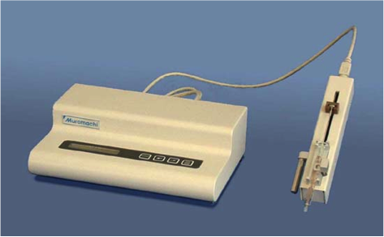 |
|
| Online Booking | All enquiries are welcome to Baile Wang (blwong@hku.hk) |
Small Animal Intensive Care Unit (Harvard Apparatus) | |
 |
|
| Online Booking | All enquiries are welcome to Lai Yee Cheong (u3003285@hku.hk) |
Hyperinsulinemic-euglycemic Clamp | |
| 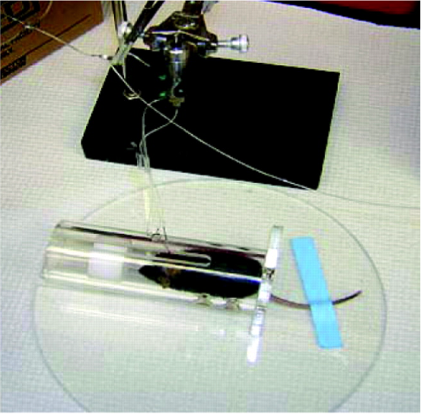 |
|
| Online Booking | All enquiries are welcome to Baile Wang (blwong@hku.hk) |
Implantable Telemetry System (Data Sciences International) | |
| 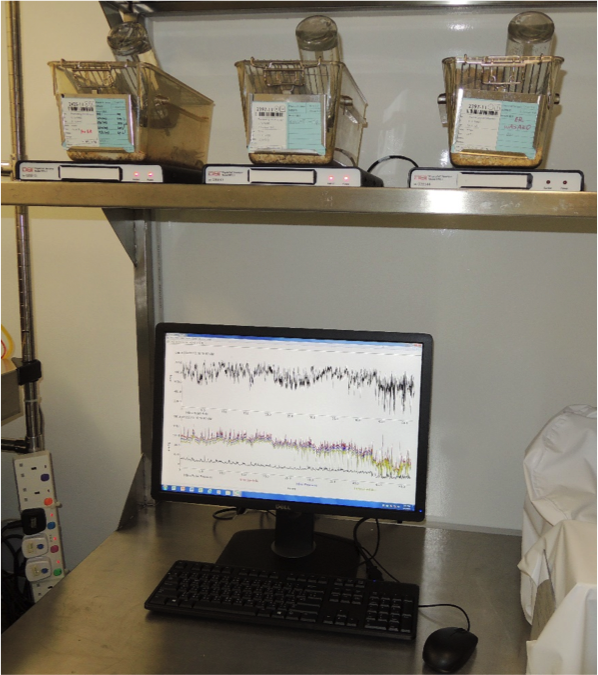 |
|
| Online Booking | All enquiries are welcome to Debbie Deng (hbdeng1@hku.hk) at 39179257 |
Vevo® 2100 System | |
| 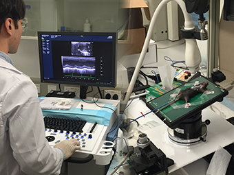 |
|
| Online Booking | All enquiries are welcome to Connie Woo (cwhwoo@hku.hk) |
XF Extracellular Flux Analyzers (Seahorse) | |
| 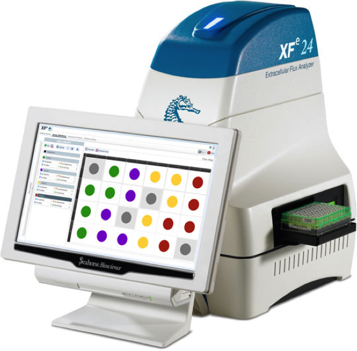 |
|
| Online Booking | All enquiries are welcome to Hannah Hui (hannahui@hku.hk) |
BS120 Automatic Biochemical Analyzer (Mindray) | |
| 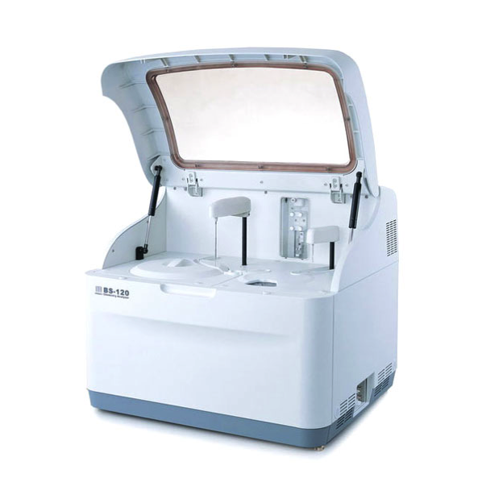 |
A bench-top analyzer for clinical biochemical analysis and biochemical reagents development.
|
| Online Booking | All enquiries are welcome to Pengcheng Zhou (zhoupc@hku.hk) at 28315525 |
Synergy H1 Hybrid Microplate Reader (BioTek) | |
| 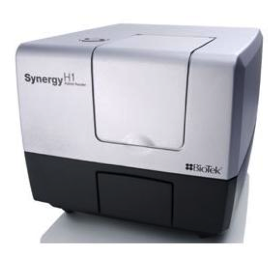 |
|
| Online Booking | All enquiries are welcome to Pengcheng Zhou (zhoupc@hku.hk) at 28315525 |
Anaerobic Chamber (DWS DG250) | |
| 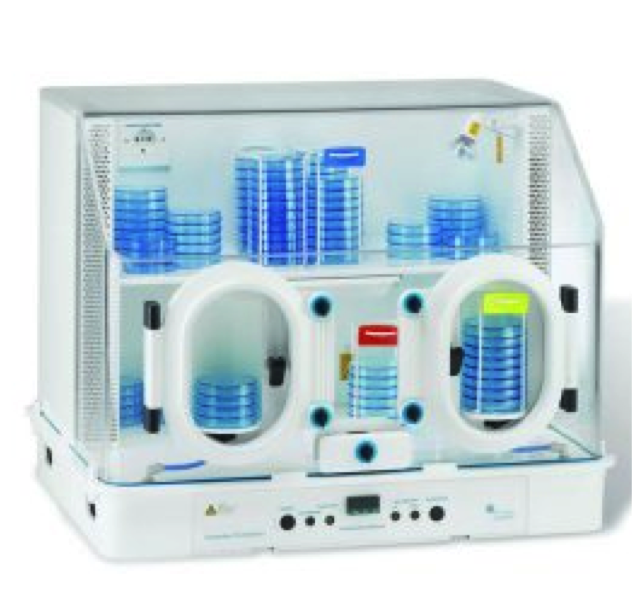 |
|
| Online Booking | All enquiries are welcome to Jin Li (jinli@hku.hk) at 39179763 |
Gas Chromatography–Mass Spectrometry (TRACE 1300/ISQ Single Quadrupole) | |
| 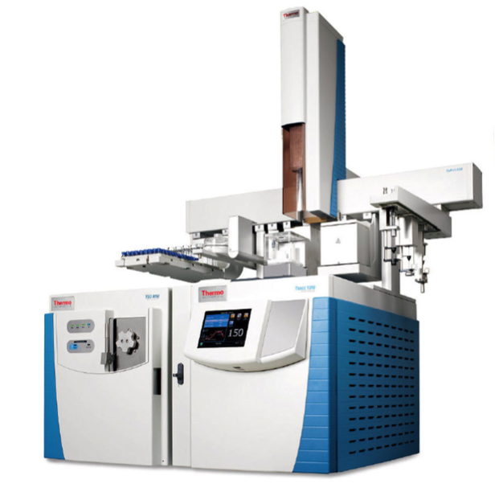 |
|
| Online Booking | All enquiries are welcome to Pengcheng Fan (pcfan@hku.hk) at 39179257 |
High-pressure Liquid Chromatography (Agilent 1100 series) | |
| 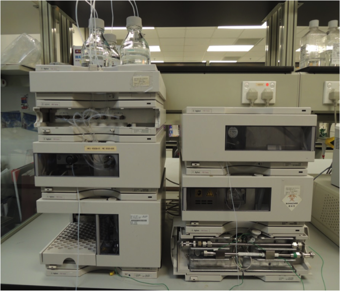 |
|
| Online Booking | All enquiries are welcome to Pengcheng Fan (pcfan@hku.hk) at 39179257 |
Yeast Two-hybrid (Y2H) Screening | |
|
Yeast two-hybrid (Y2H) screening is a mature technique to discover novel protein interactions and maps the precise binding regions between two proteins. Our service includes: 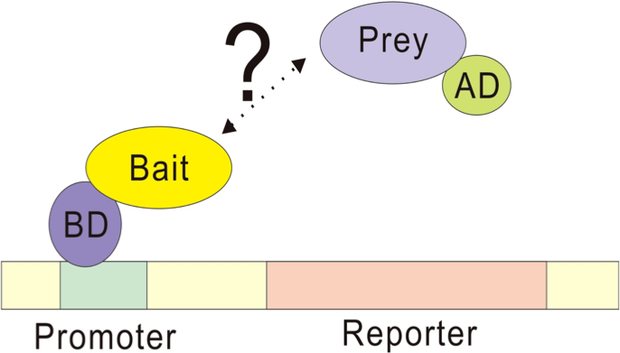
|
|
| Online Booking | All enquiries are welcome to Jimmy Lee (jimmylee@hku.hk) at 39179763 |
Viral Services | |
|
We offer a broad range of viral expression system (Adenovirus, Lentivirus and Adeno-associated virus) for gene delivery. 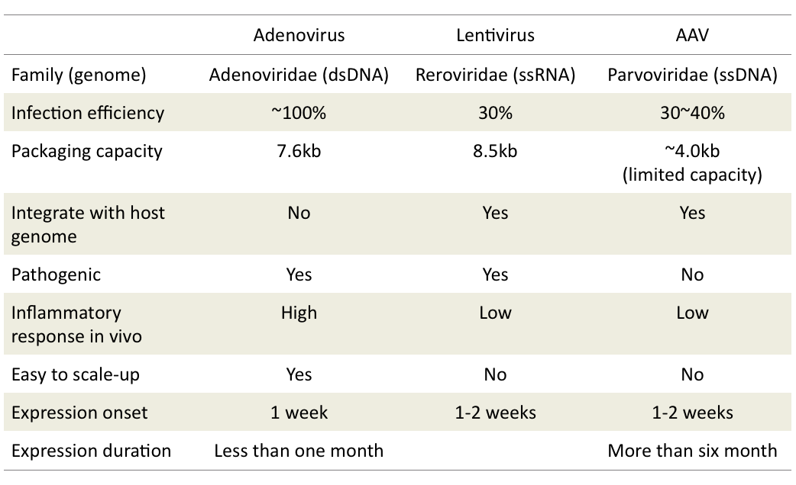
|
|
| Online Booking | All enquiries are welcome to Huang Zhe (huangzhe@hku.hk) at 39179763 |
ÄKTA Explorer™ with Fraction Collector Frac-950 | |
| 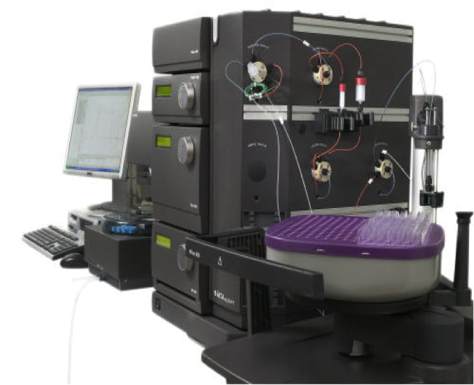 |
ÄKTAexplorer™ chromotography systems are designed for fast development and optimization of any biomolecular purification, using one working platform for all techniques and samples. The method wizard and optimized system configurations, allow rapid media screening, method scouting, method optimization, and scale-up experiments
|
| Online Booking | All enquiries are welcome to Pengcheng Zhou (zhoupc@hku.hk) at 28315525 |
RALF Autoclavable Benchtop Bioreactor BiOENGiNEERiNG (Switzerland) | |
| 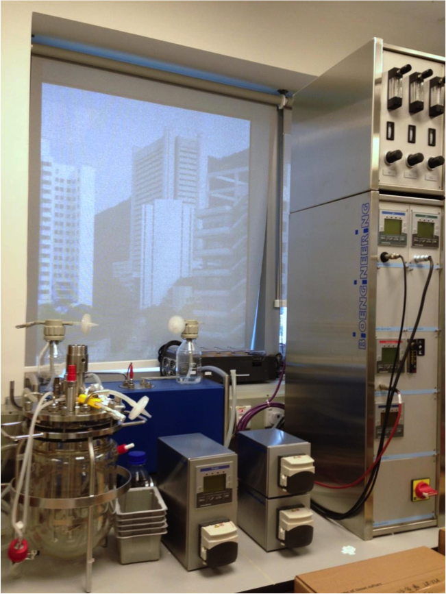 |
|
| Online Booking | All enquiries are welcome to Pengcheng Zhou (zhoupc@hku.hk) at 28315525 |
Non-contacting Protein Dispenser | |
| 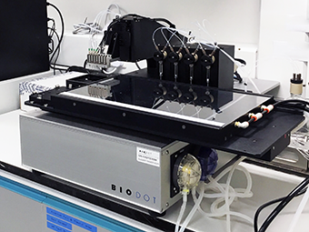 |
|
| Online Booking | All enquiries are welcome to Pengcheng Zhou (zhoupc@hku.hk) at 28315525 |
Strain | Name | Genotype | Description |
| B6.Cg-Tg(Fabp4-cre)1Rev/J |
Adipocyte and macrophage cre | Fabp4-Cre | Transgenic mice expressing Cre recombinase driven by mouse Fabp4 promoter. These FABP4-Cre transgenic mice are a Cre-lox tool useful for deletion of floxed sequences in brown, white adipose tissue and macrophages. Application For generation of adipocyte- or macrophage- specific knockout mice (...Further Info) |
| B6;FVB-Tg(Adipoq-cre)1Evdr/J |
Adiponectin-Cre | Adipoq-Cre | Transgenic mice expressing Cre recombinase driven by the mouse adiponectin (Adipoq) promoter/enhancer regions. Adipoq-Cre BAC transgenic mice are a Cre-lox tool for deletion of floxed sequences in white adipose tissue and brown adipose tissue, but not in activated or resident macrophages. Application For generation of adipocyte specific knockout mouse model (...Further Info) |
| B6.Cg-Apoetm1Unc (D12Mit182-D12Mit2)/Pgn 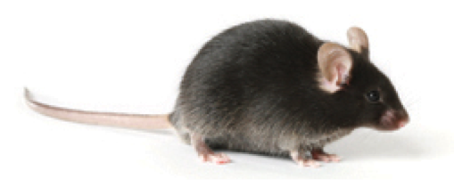 |
ApoE-KO | ApoE-/- | Mouse with targeted knockout of apolipoprotein gene. Application Disease model for atherosclerosis and hypercholesterolemia (...Further Info) |
| B6.Cg-Dock7m Leprdb/+ +/J |
db/db mice | Mice with spontanonous mutation at leptin receptor gene. Application Disease model for obesity and type 2 diabetes (...Further Info) |
|
| FVB-Tg(Tek-cre)2352Rwng/J | Endothelium Cre | Tie2-Cre | Transgenic mice expressing the Cre recombinase driven by mouse Tek, endothelial-specific receptor tyrosine kinase (also known asTie2), promoter. Application Generation of endothelium specific knockout mice (...Further Info) |
| B6.Cg-Tg(Alb-cre)21Mgn/J | Liver Cre | Alb-Cre |
Application For generation of hepatocyte specific knockout mice (...Further Info) |
| B6.129P2-Lyz2tm1(cre)Ifo/J | Macrophage Cre | Lys-Cre | Mice have a Cre recombinase inserted into the lysozyme 2 gene. Application For generation of the myeloid cell lineage specific knockout mice (...Further Info) |
| STOCK Mir34atm1.2Aven/J | Microrna-34 mice | micro34-/- | miR-34afl/fl mice possess loxP sites flanking the entire microRNA 34a (miR-34a) sequence (...Further Info) |
| B6.FVB(129S4)-Tg(Ckmm-cre)5Khn/J | Muscle Cre mice | Ckmm-cre | Transgenic mice expressing Cre recombinase driven by the muscle creatine kinase (MCK or Ckm) promoter. Application For generation of muscle specific knockout mice (...Further Info) |
| NOD/ShiLtJ 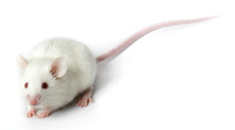 |
NOD mice | NOD | Disease model for type 1 diabetes. Diabetes in NOD/ShiLtJ mice is characterized by insulitis, a leukocytic infiltration of the pancreatic islets (...Further Info) |
| B6.129P2-Trp53tm1Brn/J (p53-fl) | p53-fl | p53fl/fl | When these p53flox mice are bred to mice with a Cre recombinase gene under the control of a promoter of interest, Trp53 expression is deleted in the tissue of interest. Exons 2-10 are flanked by loxP sites in this conditional targeted mutation. Mice homozygous for the floxed allele do not show any increase in disease incidence for at least a year. When bred to mice with a cre recombinase gene under the control of a promoter of interest, expression is deleted in the tissue of interest (...Further Info) |
| B6.Cg-Tg(Ins2-cre)25Mgn/J | beta-cell Cre | Ins-Cre | Transgenic mice express Cre recombinanse driven by rat insulin II promoter. Application For generation of pancreatic beta cell specific knockout mice (...Further Info) |
| B6;129S4-Pparatm1Gonz/J | PPARα-KO mice | PPARα-/- | Mice with targeted mutation at PPARα gene. Application Mouse model for studying lipid metabolism, cell proliferation, diabetes, obesity, and wound healing (...Further Info) |
| B6;129-Sirt1tm1Ygu/J | Sirt1-fl mice | Sirt1fl/fl | Mice with A loxP-flanked neomycin cassette just upstream of exon 4 and a third loxP site downstream of exon 4 were inserted to create this targeted mutant Sirt1 allele. Application Disease models for studying mammary gland development, mammary cancer, apoptosis, and metabolic diseases (...Further Info) |
| B6;129S4-Tet1tm1.1Jae/J | TET-1 mice | TET-Tg | Mice with targeted mutation at Tet1 gene. Application For studies of embryonic cell pluripotency and development (...Further Info) |
| STOCK Tg(TIE2GFP)287Sato/J 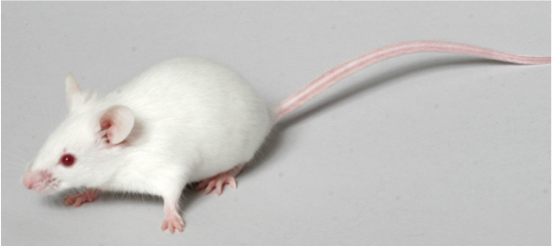 |
Tie2-GFP | Tie2GFP | Mice expressing Green Fluorescent Protein (GFP) driven by endothelial-specific receptor tyrosine kinase (Tek, formerly, Tie2) promote. Application For study of vascular development (...Further Info) |
| C3H/HeJ | TLR4-KO | TLR4-/- | A spontaneous mutation occurred in C3H/HeJ at the lipopolysaccharide response locus. Application Mouse model for immunology, inflammation and autoimmunity Research (...Further Info) |
| C57BL/6J-Ticam1Lps2/J | TIRF mice | Ticam1Lps2/Ticam1Lps2 | Chemically induced mutation at lipopolysaccharide 2 gene. Application Studies of immunodeficiency and host response to bacterial endotoxins and viruses (...Further Info) |
All enquiries are welcome to Ruby Hoo (rubyhoo@hkucc.hku.hk) at 39179767